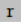
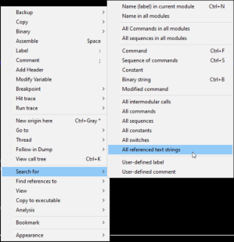

find entry point of a function
When a debugger launch an application, the execution flow of the application will be paused at the entry point.
The entry point does not always coincide with the beginning of the main function. This because the entry point is set by the compiler to a section of code created to help prepare the execution of the program.
If we have a printf string in the main function we can find it by:
◇
 show references
or
◇ in the main window: right click → search for → All referenced text string
 this give us all the string defined in the program
double clicking on the string of our interest we directly jump on the disassembled section of the program where the string is defined